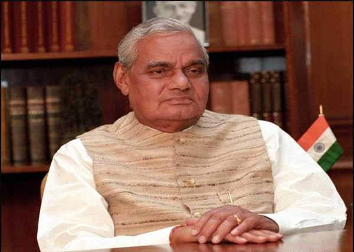

Mr. Atal Bihari Vajpayee

Atal Bihari Vajpayee was an Indian politician and statesman who served
three terms as the 10th Prime Minister of India, first for a term of 13
days in 1996, then for a period of 13 months from 1998 to 1999, followed
by a full term from 1999 to 2004
About the Legend
- Vajpayee was first elected to parliament in 1957 as a member of the
Bharatiya Jana Sangh (BJS), a forerunner of the BJP.
- In 1977 the BJS joined three other parties to form the Janata Party, which
led a government that lasted until July 1979.
- As foreign minister in the Janata government, Vajpayee earned a
reputation for improving relations with Pakistan and China. In 1980,
following a split in the Janata Party, Vajpayee helped the BJS to
reorganize itself as the BJP.
- In 1992 he was one of the few Hindu leaders to speak out against the
destruction of the historic mosque at Ayodhya by anti-Muslim
extremists.
- Sworn in as prime minister in May 1996 but was in office only 13 days,
after failing to attract support from other parties.
- In early 1998 he again became prime minister, in elections in which
the BJP won a record number of seats, but he was forced to make a shaky
alliance with regional parties.
- In 1999 the BJP increased its seats in parliament and consolidated
its hold on government.
For more Information please click on below link
Click Here...